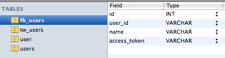
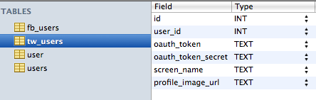
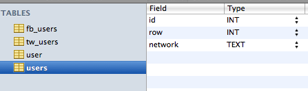

postFlo
A simple workflow for getting permission to post to users social profiles + a simple workflow to post to all the users profiles.
The Buttons
Try 'em out!
I love this so much I want to give you my Facebook!
I love this so much I want to give you my Twitter!
Send posts to users
Notes
postFlo consists of two pieces: a user permission gathering system and a user posting system.
Permission Gathering System
On the Facebook side of things:
- Create a new Facebook application
- Create a new authorization URL based on our requested permissions: offline_access and publish_stream
- Present the user this URL in the form of a pretty button
- When the button is clicked, the standard Facebook App log in & authorization pages appear
- The user fills them out and grants us access
- Facebook passes some tokens to our nifty redirect_uri; we call it fbCallback.php
- fbCallback.php takes the users access tokens and saves it to a table called 'fb_users'; an example row is:
- id = 7, user_id = 753842370, name = John Smith, access_token = AAAEoiZBzvqZAcBAN1vpoekfwoiejfoiwejfoiwejfoiwjef6
- fbCallback.php inserts id as 'row' into into a table called 'users' along with their network (fb)
On the Twitter side of things:
- Create a new Twitter object
- Create a new authorization url based on our app's consumer key and consumer secret
- Present the user this URL in the form of a pretty button
- When the button is clicked, the standard Twitter App log in & authorization pages appear
- The user fills them out and grants us access
- Facebook passes some tokens to our nifty callback url; we call it twCallback.php
- fbCallback.php takes the users access tokens and saves it to a table called 'fb_users'; an example row is:
- id = 7, user_id = 422382022, screen_name = CreatechConsult, profile_image_url = http://imagepath.jpg, oauth_token = longToken, oauth_token_secret = longTokenSecret,
- twCallback.php also inserts the user into a table called 'users' along with their network (tw)
The reason we have a seperate table called 'users' is so that we can easily call both the Twitter and Facebook users in other places, like admin.php.
Overview of the tables:
- fb_users
- tw_users
- users
9
Posting System
You (the admin) visits admin.php. You fill it out, and then the admin.php sends data over to notify.php. Notify.php does the dirty work of actually sending the users the notifications.
admin.php
- Is just a form that sends data to notify.php via POST
- Uses /lib/login for security
- Pulls users from the 'users' table
- Sets up a new Facebook and Twitter object
- If they are from Facebook, it pulls their info from the 'fb_users' table
- If they are from Twitter, it pulls their info from the 'tw_users' table
- If they are from Twitter, it gets their Klout score
notify.php
- Uses POST to get the data from admin.php
- Goes through the user list that is passed, determines which table they are in, and then runs the appropriate post function: postToTW.php or postToFB.php
postToTW.php
- Sets up a Twitter object that posts using the passed tokens and message to Twitter
- Returns a success or fail message
- Uses /lib/twitter
postToFB.php
- Sets up a Facebook object that posts using the passed tokens and message to Facebook
- Returns a success or fail message
- Uses /lib/facebook
Settings
Settings are stored in:
- config.php - houses the database connection settings, twitter settings, and facebook settings
- Facebook App - The canvas url of our app
- You specify the callback uri within the code, redirect_uri
- Twitter App - The url of our app, the callback URL, the permissions we need, and such
The Library
We use quite four libraries (all stored in /lib) to power the app.
- /lib/facebook - v3 of the Facebook PHP SDK
- /lib/twitter - uses twitter-async, from https://github.com/jmathai/twitter-async
- /lib/klout - custom written, super simple
- /lib/login - uses PHP Login Script, from https://github.com/sonusandhu/PHP-Login-Script
- This was wripped and torn apart to make it work. To be able to utilize the files in /lib/login, be sure to update the path to config.php within /lib/login/include/adminFunctions.php